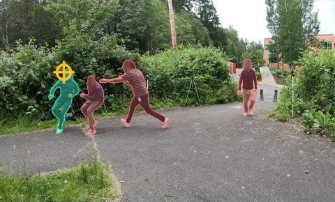
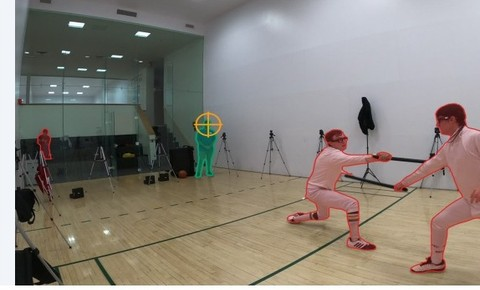
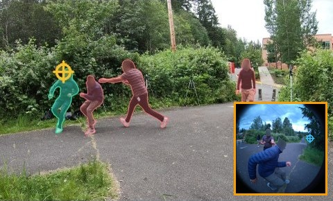
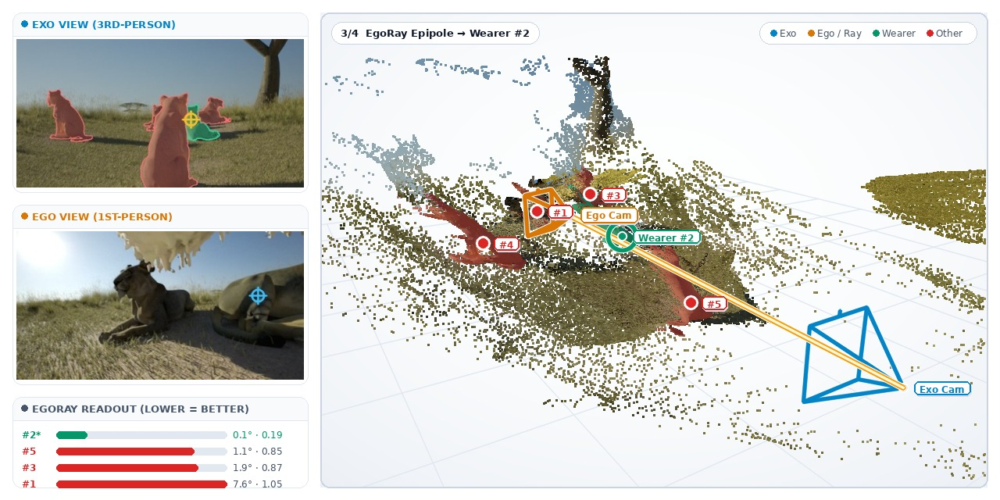

How EgoRay Works
Core insight: the camera wearer is simply where the ego camera is in 3D. In EgoRay-ZS, VGGT-Ω predicts relative pose and exo depth (A), a training-free geometric readout scores every candidate (B), and the lowest score answers all three tracks (C). EgoRay further trains LoRA adapters via pose supervision (D) and label-free test-time adaptation (E).
(B) Training-Free 3D Readout
Uses (R̂, t̂, K̂, D) from (A) directly — zero learned classifier heads.

Track A · argmin siWearer Identification
Ranks given candidate masks by lowest combined geometric score si — locking directly onto Wearer #4.

Track B · min si, θi ≤ θ☆Wearer Segmentation & Absence
Scores open-vocab SAM 3 proposals from category words — or declares ABSENT if θmin > θ☆ or behind exo camera.

Track C · êexo ↔ êegoMutual Camera Localization
Directly reads out both unit epipoles: ego camera in exo view (amber +) and exo camera in ego view (blue +).
Why 3D Depth Matters: Resolving Collinear Occlusion in Practice
In this real FindEgo-1M savanna scene (Wild Animals · Lions), foreground lion #5 stands nearly along the exact same viewing ray as true collar-camera wearer #2. Toggle between 2D Angle Only and EgoRay (Angle + 3D Depth) to see how 3D camera distance resolves the tie.

Visualizing Label-Free Test-Time Adaptation (Before × → After +)
Red × = before TTA · Cyan + = after TTA · Yellow ○ = ground-truth epipole · Click to enlarge